This IBM Integration Bus V10 Open Beta technology tutorial demonstrates how you can transform data from one format to another by using the Graphical Data Mapping editor. In this particular scenario, the Graphical Data Mapping editor is used to transform messages between the DFDL modelling language and the JSON data format.
An IBM Integration Bus message map is used to transform data from an input file that contains vCard records into multiple JSON messages. The content of the data is also validated. Depending on the information included in each record, the corresponding JSON message produced might be a reject message or a valid message.
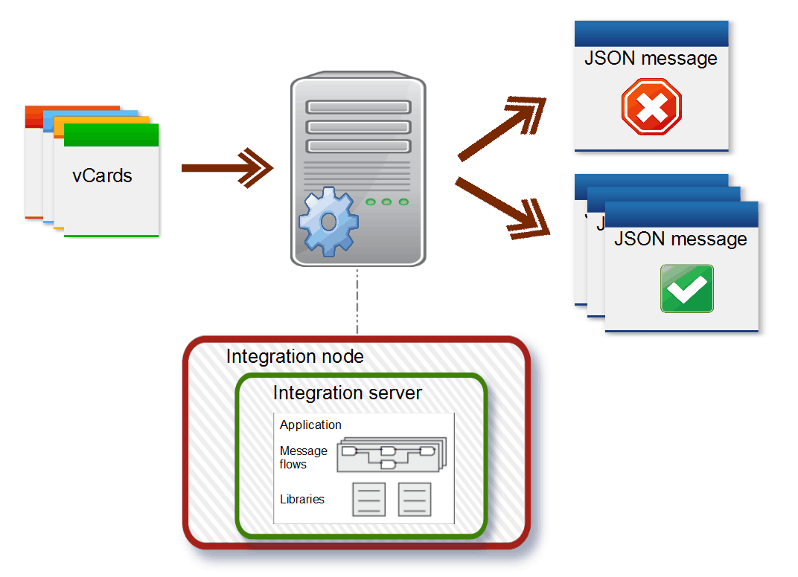
Whether you are an experienced IBM Integration Bus developer or just starting to use the product, you can use this tutorial to learn how to achieve the following tasks:
- Dynamically model a JSON message by using the Add User-Defined function in the Graphical Data Mapping editor.
- Define transforms between an input message and an output message.
- Determine whether or not a transform is applied by using XPATH conditional expressions on a transform within a message map.
- Validate input content and determine which type of output message to generate by using conditional expressions in a message map.
Product Prerequisites
Product Concepts
DFDL overview
Data Format Description Language (DFDL) 1.0 is a modeling language from the Open Grid Forum, which is used to define the structure of general text and binary formatted data in a way that is independent of the data format. The DFDL is based on XML Schema 1.0.
DFDL is a way of describing the data. It is not a data format in itself. DFDL can describe many different data formats, including the following:
-
Textual and binary data formats
-
Commercial record-oriented data formats
-
Scientific and numeric data formats
-
Modern and legacy data formats
-
Industry standard data formats
In IBM Integration Bus, you use the DFDL editor to define DFDL schemas for your data. You can model DFDL schemas for any of the following types of data:
-
Comma Separated Value (CSV)
-
Record-oriented
-
COBOL data structures
-
C Header files. Some restrictions apply; see
 Importing from C (DFDL): restrictions
Importing from C (DFDL): restrictions -
Custom text or binary
-
Any other text or binary format
Pre-built DFDL schemas for industry standard formats are available from the DFDLSchemas repositories on GitHub.
For more information, see DFDL Schemas for Commercial and Scientific Data Formats.
DFDL schema files use XML Schema objects, and annotations on those objects to define the data.
-
The XML Schema objects define the logical format of the data. You cannot use XML attributes in the data model. Some restrictions apply. For more information, see
DFDL specification. -
DFDL schema annotations describe the physical format of the data.
-
XPath expressions are used to reference fields within the data.
Note: DFDL is not intended to model XML. Use normal XML Schema files to model XML documents.
IBM Integration Bus V10 Open Beta legal information
This tutorial applies to IBM Integration Bus Version 10.0 Open Beta (the "program"), hereby also referred to as IBM Integration Bus V10.0 Beta. By downloading, installing, copying, accessing, or otherwise using the program and this documentation, you agree to the terms of use as described in the IBM Integration Bus Version 10.0 Open Beta license agreement.
IBM’s statements regarding its plans, directions, and intent are subject to change or withdrawal without notice at IBM’s sole discretion. Information regarding potential future products is intended to outline our general product direction and it should not be relied on in making a purchasing decision. The information mentioned regarding potential future products is not a commitment, promise, or legal obligation to deliver any material, code or functionality. Information about potential future products may not be incorporated into any contract. The development, release, and timing of any future features or functionality described for our products remains at our sole discretion.
Tutorial Copyright
Copyright (c) 2014 IBM Corporation and other Contributors
All rights reserved.
This program and the accompanying materials are made available under the terms of the Eclipse Public License v1.0 which accompanies this distribution, and is available at Eclipse Public License - v 1.0.
Contributors: IBM - initial implementation
Install IBM Integration Bus V10 Open Beta
-
1. Download IBM Integration Bus V10 Open Beta.
-
Note: An IBM user ID is required. If you do not already have an IBM user ID, you can create one using a link on the IBM Integration Bus V10 Open Beta web page.
- 2. Install IBM Integration Bus V10 Open Beta by following the instructions in IBM Knowledge Center:
-
Additional resources:
You can also watch an installation video. See IBM Integration Bus V10 Open Beta installation video.
IBM Integration Bus V10 Open Beta installation video
Download and import the vCard 2.1 DFDL model

-
1. Download the vCard 2.1 DFDL model from GitHub. (Click on the Download ZIP button.)
-
2. Extract the downloaded compressed file to the following location:
- On Windows: C:\IIB\dfdl
- On Linux: /IIB/dfdl
-
3. Start IBM Integration Bus Toolkit. For more information, see How do I use the IBM Integration Bus Toolkit?
-
1. In the Application Development view, click the New... link, then then select Start by creating a library. The New Library wizard opens.
Example screen capture -
2. On the Create a new library page, in the Library name field, type vCard_2.1_shared, ensure that the Shared library radio button option
is selected, then click Finish.
Example screen capture
-
1. In the Application Development view, right-click the vCard_2.1_shared library project, then click Import....
Example screen capture -
2. From the list of import sources, expand the General entry, then select File System, and click Next.
Example screen capture - 3. On the File system page, click the Browse... button and navigate to the DFDL schema model that you downloaded and extracted during Stage 1, and select the directory named 2.1, then click OK.
-
4. Select the 2.1 check box, then click Finish.
Example screen capture
Download and import the tutorial file
-
1. Download the vCard-JSON-GDM-tutorial files from GitHub and save to the following location
- On Windows: C:\IIB\gdm
- On Linux: /IIB/gdm
-
2. Start IBM Integration Bus Toolkit. For more information, see How do I use the IBM Integration Bus Toolkit?
-
1. In the Application Development view, right-click the white space to open a menu, then click Import.... The Import window opens.
-
2. Expand the IBM Integration folder, then select Project Interchange and click Next.
- 3. On the Import Project Interchange Contents page, click Browse... then select the InitialvCardToJsonPI.zip file, then click Open.
-
4. Click Finish.
You have imported the initial PI file.
The following screen capture shows IBM Integration Bus Toolkit after you import the tutorial PI file, with some of the elements expanded:
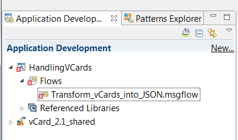
Configure the application project
- In this tutorial, a FileInput node is used to process business card records that are read from a file.
- The FileInput node looks in a directory named BusinessCards for files to process.
- The FileInput node reads one or more records from a single file, and each record is propagated as a separate flow transaction.
- The properties of the FileInput node specify how the node determines the records in a file.
- For more information, see FileInput node.
- This tutorial also requires a FileOutput node, which is used to write messages to a file.
- The FileOutput node writes files to a directory named Cards.
- The FileOutput node writes files as a sequence of one or more records. Each record is generated from a single message received on the In terminal of the node. By default, each file comprises a single record but you can use properties on the FileOutput node to specify that the file comprises multiple records, and also how these records are accumulated in a file.
- The FileOutput node writes accumulated messages to a file, and places it in a specified output directory.
- The Properties of the FileOutput node specify how the node writes the records to a file.
- For more information, see FileOutput node.

-
1. To run this tutorial, you must create a directory folder named BusinessCards, as specified below:
- On Windows: C:\IIB\BusinessCards
- On Linux: /IIB/BusinessCards
-
2. You must also create a directory folder named Cards, as specified below:
- On Windows: C:\IIB\Cards
- On Linux: /IIB/Cards
-
1. In the Application Development view, right-click the HandlingVCards application project and then select Manage Library references. The Manage Library References window opens.
Example screen capture -
2. Select vCard_2.1_shared and then click OK.
Example screen capture
- 1. In the Application Development view, expand the HandlingVCards > Flows application project and double-click the Transform_vCards_into_JSON.msgflow message flow. The message flow is displayed in the Message Flow editor.
- 2. On the Message Flow editor, click on the FileInput node to view its properties within the Properties view.
-
3. Configure the input node properties by completing the following steps on the Input Message Parsing properties tab:
- In the Message domain field, select the DFDL : For binary or text messages with a Data Format Description Language schema model message domain.
- In the Message model field, select the {vCard_2.1_shared} message model.
- In the Message field, select the {http://www.ibm.com/dfdl/vCard/2.1}:vCard message.
-
4. On the Basic properties tab, ensure that the Input directory field is set to point to the BusinessCards directory that you created in stage 1, and that the File name or pattern field is set to vcard*.
Example screen capture -
5. On the Parser Options properties tab, ensure that the Parse timing field is set to Immediate and that none of the check boxes is selected.
Example screen capture -
6. On the Records and Elements properties tab, ensure that the Record detection field is set to Parsed Record Sequence.
Example screen capture
Create a message map
To complete the steps in this section, you must have IBM Integration Bus Toolkit open.
-
Message maps:
A message map is the IBM Integration Bus implementation of a graphical data map. It is based on XML schema and XPath 2.0 standards. But you can also transform JSON data.
- You can use a message map to graphically transform, route, and enrich a message.
- You can use a message map to modify data in a database system.
- You can use drag actions on the canvas to make connections, select transforms, and build logic to transform your message data without programming.
For more information, see
Message maps.Mapping messages between unlike domains:Outside of this tutorial, if you want to map messages between unlike domains, it might be necessary to set the MessageSet, the MessageType, and the MessageFormat elements within the Properties tree of the output message assembly.
The fields that need setting in such cases will depend on the target parser associated with the output message domain (JSON, SOAP, etc.). When you create a new map, the Graphical Data Mapping editor will add an Override group of transforms that includes a Move and an Assign transform, which are used to set default values for these elements in the output.
For more information, see the following documentation available in IBM Knowledge Center:
Complete the following steps to create a message map in the Application Development view of IBM Integration Bus Toolkit:
- 1. Start the New Message Map wizard. In the IBM Integration Bus Toolkit, click File > New > Message Map.
-
2. On the Specify a new message map file page of the wizard, complete the following steps:
- Select Message map called by a message flow node as the type of map that you want to create.
- Use the Container drop-down list to select HandlingVCards.
- In the Map name field, enter the name: Transform_vCards_into_JSON_Mapping.map
This is the name of the map that you are going to create. - Click Next.
Example screen capture
-
3. On the Select map inputs and outputs page of the wizard, complete the following steps:
- In the Select map inputs section, expand the vCard_2.1_shared > DFDL and XML Schemas entry, then select the vCard {http://www.ibm.com/dfdl/vCard/2.1} check box. This is the input object for the message map.
Note: Ensure that you select the vCard check box and not the vCards check box.
- In the Select map outputs section, expand the IBM supplied message models entry, then select the JSON {JSON object message model supplied by IBM} check box. This is the output object for the message map.
Example screen capture - Click Next.
- In the Select map inputs section, expand the vCard_2.1_shared > DFDL and XML Schemas entry, then select the vCard {http://www.ibm.com/dfdl/vCard/2.1} check box. This is the input object for the message map.
-
4. Verify that the Output domain field is set to JSON, then click Finish to create the message map.
Example screen capture
You have created your Transform_vCards_into_JSON_Mapping message map.
The map opens in the Graphical Data Mapping editor. The following screen capture shows the message map, with some of the elements expanded:
Model the output JSON message in a message map

-
User-defined elements:
A user-defined element is an element that you can add directly into a message map to define the data of an extension point, shown as any or anyAttribute in the map. You can add user-defined elements to define extension points in any of the following message assembly components:
- The local environment tree variables folder
- The message body
- xsd:any elements in your message body
- The environment tree
- The transport headers that include extension points, such as MQRFH2
You can also use user-defined elements to define a JSON message, and a SOAP or XML message that has an xsd:any in a message map.
You can add any of the following types of user-defined elements:
- Simple type user-defined elements
- Complex type elements
- Repeatable user-defined elements
For more information, see
Defining user-defined elements.
A JSON message consists of name-value pairs, which are known as JSON objects, and ordered collections of values, which are known as JSON arrays. For more information, see
Creating or transforming a JSON output message by using a message map.
Mapping messages between unlike domains:- To define a JSON object, use the Add User-Defined function to add an element,
and select one of the supported simple types.
For more information, see Creating a simple JSON object in a message map.
- To define a JSON array, use the Add User-Defined function to add an element,
and select JSON array as its type.
For more information, see Creating a JSON array in a message map.
- To define a nested JSON array, use the Add User-Defined function to add multiple elements,
and select JSON array as their types.
For more information, see Creating a multidimensional JSON array in a message map.
This tutorial demonstrates how you can transform data held in vCard records into the following JSON message output:
The JSON message includes the following elements:
| Row | Element name | Graphical Data Mapping editor data type | JSON element data type | Cardinality |
|---|---|---|---|---|
| 1 | Operation | string | JSON object | Mandatory (1..1) |
| 2 | ClientDetails | Anonymous | JSON array | Mandatory (1..1) |
The JSON array ClientDetails contains the following elements:
| Row | Element name | Graphical Data Mapping editor data type | JSON element data type | Cardinality |
|---|---|---|---|---|
| 1 | Title | string | JSON object | Mandatory (1..1) |
| 2 | Name | string | JSON object | Mandatory (1..1) |
| 3 | LastName | string | JSON object | Mandatory (1..1) |
| 4 | string | JSON object | Mandatory (1..1) | |
| 5 | WorkAddress | Anonymous | JSON array | Optional (0..1) |
| 6 | HomeAddress | Anonymous | JSON array | Mandatory (1..1) |
| 7 | OtherAddress | boolean | JSON object | Optional (0..1) |
The JSON array WorkAddress contains the following elements:
| Row | Element name | Graphical Data Mapping editor data type | JSON element data type | Cardinality |
|---|---|---|---|---|
| 1 | Street | string | JSON object | Mandatory (1..1) |
| 2 | Region | string | JSON object | Mandatory (1..1) |
| 3 | PostalCode | string | JSON object | Mandatory (1..1) |
| 4 | Country | string | JSON object | Mandatory (1..1) |
The JSON array HomeAddress contains the following elements:
| Row | Element name | Graphical Data Mapping editor data type | JSON element data type | Cardinality |
|---|---|---|---|---|
| 1 | Street | string | JSON object | Mandatory (1..1) |
| 2 | City | string | JSON object | Mandatory (1..1) |
| 3 | PostalCode | string | JSON object | Mandatory (1..1) |
| 4 | Country | string | JSON object | Mandatory (1..1) |
-
1. Within the Message Assembly output object, expand the JSON > choice of cast items > Data element, then right-click the Any element, and select the Add User-Defined function.
Example screen capture - 2. Type Operation as the name of the element, then press Enter.
-
The following screen capture shows what your output object now looks like within the Graphical Data mapping editor:
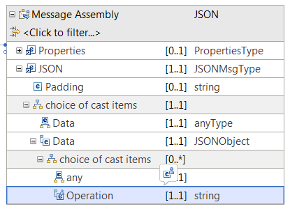
NOTE: By default, when you use the Add User-Defined function, each new element is created as a string element. However, in this tutorial, you need to edit the data type and cardinality of certain elements, as indicated in the section entitled "The JSON message output and data structure" above.
-
1. Within the JSON > choice of cast items > Data > choice of cast items element, right-click the Any element, then select the Add User-Defined function.
A new element is created at the same level as the Operation element.
Example screen capture
-
2. Type ClientDetails as the name of the element, then press Enter.
Example screen capture
By default, the ClientDetails element is created with the data type string. However, for this tutorial, the ClientDetails element must be a complex element, containing child elements. -
3. To change the data type of the ClientDetails element, click the ClientDetails row so that it receives focus, then click on the data type (currently set to string), and select <Anonymous> from the drop-down list.
Example screen capture -
When you change the data type to <Anonymous>, a new child element is added to your model.
Example screen capture -
4. Rename the child element. Type Title and press Enter.
Example screen capture -
5. Right-click the ClientDetails element, then select Add Child Element to add a new child element to ClientDetails.
Example screen capture
Use this process to add the following child elements to the ClientDetails complex element:- Name
- LastName
-
1. Repeat the previous procedure to define the remaining elements:
- WorkAddress and its child elements
- HomeAddress and its child elements
- OtherAddress
Note: Remember to edit the data type and cardinality of the child elements in accordance with the information provided in the section entitled "The JSON message output and data structure" above.
After you complete the previous steps, the JSON message that you define looks like the one in the following screen capture:
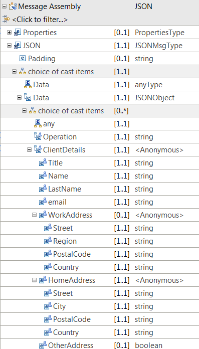
Define and configure a conditional transform
To implement the conditional expression that is used to determine whether the If transform is applied or not, you must configure the If transform properties. You define an XPath 2.0 expression expression within the Condition tab of the transform Properties.
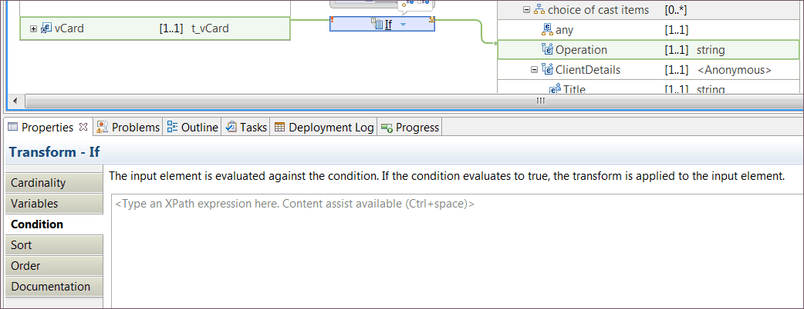
Background information:
- Any transform that you define in a message map can have different types of input data. Some input data is used only to define conditional expressions that determine when the transform should be applied in the map. Other input data is used as part of the transformations performed within the transform to calculate the value of an output element.
- You use a primary connection to connect an input element to a transform that is used to calculate the output value.
- You use a secondary connection to connect an input element to a transform that is used to determine whether the transform is applied.
- You can have any number of input connections to a transform.
- By default, the first connection that you define to a transform is created as a primary connection.
Background information:
- You can have any number of output connections between the If transform and an output element.
- You must define a direct connection to a simple type output element, when the transformation performed by the transform calculates a value for that output element.
- You must define a direct connection to a complex output element, when the transformation performed by the transform calculates a value for one or more elements defined by the complex output element structure.
Background information:
After you define and configure the transformations associated with the conditional transform, the If transform and the Else transform display warning symbols. These warnings indicate that there is a mismatch between the cardinality of elements in the vCard object and the JSON message.
The vCard elements can be repeating, that is, they have a cardinality of 0..*. The JSON messages are non-repeating elements. The Graphical Data Mapping editor requires clear configuration of the indexes that should be applied on each transformation.
By default, the Graphical Data Mapping editor uses the first index if none are specified.
In the Graphical Data Mapping editor, you can use transforms, cast functions, and XPath 2.0 functions to run different actions on input
data and move the result to the output element. You choose the appropriate mapping operation that is based on the result that you want
to achieve. For more information, see Transforms (Mapping operations).
You can map elements and attributes between the input and output objects.
You can apply a transform to the mapping that specifies the action to
be performed on the input data. The result of the transform is stored
in the output element. For more information on the standard mapping
transforms that are provided by the Graphical Data Mapping editor, see Transform types in the Graphical Data Mapping editor.
When you create a connection between two or more elements, a transform is assigned, based on the number and type of input elements. You can then change the transform by choosing from a list of available transforms. If a particular transform type is not shown in the list, that transform is not valid for your input and output elements.
-
To learn more about the different transforms that you can use to set the value of a simple type output element, see Choosing a transform to set the value of a simple type output element.
-
To learn more about the different transforms that you can use to set the value of a complex type output element, see Choosing a transform to set the value of a complex output element.
- In this tutorial, you use the If transform to filter vCard records that contain a valid email address from the ones that do not contain an email address.
- The transformation logic associated with the If transform creates a JSON output message that has the Operation element set to Valid.
- The Else transform contains the logic that creates a reject JSON output message and sets the Operation element to Reject.
- In the Graphical Data Mapping editor, you implement a conditional transform using one If transform, zero or more Else If transforms, and one Else transform.
- All conditional transforms require a conditional expression, with the exception of the Else transform.
- The transformation logic associated with each conditional transform is implemented in a nested local map, which is associated to the transform.
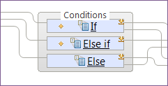
Add a transform between an input element and an output element:
- 1. In the input message assembly, click on the vCard element. The vCard element receives focus.
-
2. Drag and drop a connection from the vCard input element to the Operation output element.
By default, a Custom XPath transform is defined between the vCard input element and the Operation output element.
Example screen capture
Change the default transform to an If transform:
- 3. Click the arrow associated with the default transform. A window opens that lists the available transforms.
-
4. Expand the Core Transforms section and select the If transform.
Example screen capture
NOTE: The If transform must have a condition defined.
By default, as soon as the If transform is defined in the map, an information message is displayed to alert you that a conditional expression must be configured.
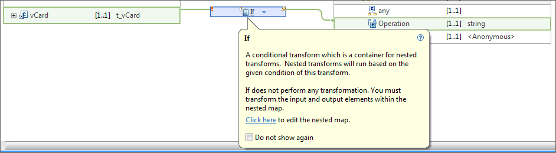
Define the conditional expression of an If transform to remove the error:
Background information- 5. In the Properties section associated with the If transform, select the Condition tab.
-
6. Specify the necessary XPath expression to test that the email value is not an empty string.
Note: Always use the content assist tool (Ctrl+Space)to obtain the element name used by the Graphical Data Mapping editor. If you copy and paste the expression provided, the solution might not work as expected.
- Press Ctrl+Space to display the content assist tool, then from the list of available entries, select $vCard > email > Value.
Example screen capture - In the Condition properties tab, append the XPath condition that checks whether a string element is empty or not: != ''
The following figure shows the entire conditional expression:
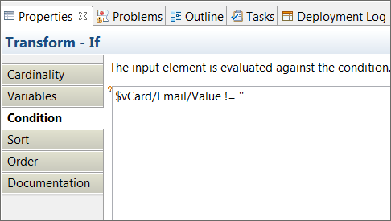
- Press Ctrl+Space to display the content assist tool, then from the list of available entries, select $vCard > email > Value.
TIP: If you cannot see the Properties view for the transform, it might be that you have the message map maximized in your workspace. Complete the following steps to open the Properties view for the transform:
- Select the transform.
- Press Alt+Enter.
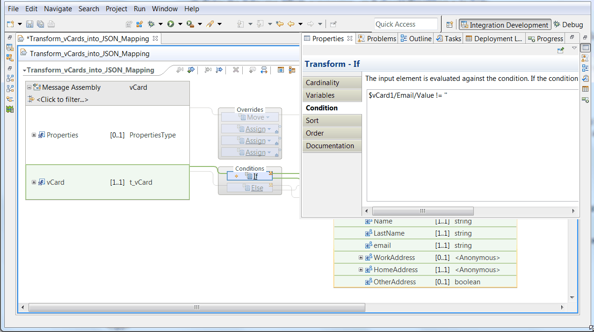
Add the Else transform associated with the If transform:
-
1. Right-click the If transform, and select Add Else from the list of available functions.
Example screen capture
Background information:
When the Else transform is added, both the If transform and the Else transform are grouped within a container named Conditions.
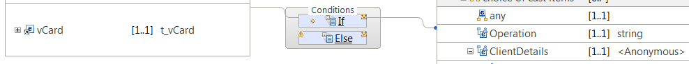
Also, when the Else transform is added, a warning icon is displayed on the left side of the transform.
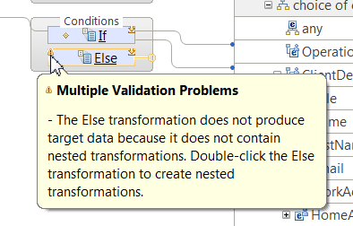
This warning exists to highlight the fact that you must define transformations within the nested map of the Else transform. You will define the required transforms, and therefore remove this warning, at a later stage in this tutorial.
Define the input connections to the Else transform:
Background information- 2. Click anywhere on the vCard element in the input message assembly.
-
3. Drag and drop a connection from the vCard element to the Else transform.
Example screen capture
Define additional output connections to the If transform:
Background information- 1. Click anywhere on the If transform.
-
2. Drag and drop a connection from the If transform to the ClientDetails complex output element.
Example screen capture
NOTE: The first connection to the Operation element is automatically defined when you add the If transform to the map.
Define the output connections to the Else transform:
- 3. Click anywhere on the Else transform.
- 4. Drag and drop a connection from the Else transform to the Operation output element.
-
5. Repeat the previous steps to add a connection between the Else transform and the ClientDetails complex output element.
Example screen capture
Define the transformation logic that must be applied when the If condition evaluates to true:
- 1. Double-click the If transform to open the nested map.
-
2. Add an Assign transform and set Accept as the value of the Operation element.
- Drag and drop a connection from the Operation output element onto the middle of the canvas.
- In the General properties tab, type Accept in the Value field.
Example screen capture
-
3. Drag a connection from vCard > Name > Family to ClientDetails > LastName to set the output element LastName.
Example screen capture - 4. Drag a connection from vCard > Name > Given to ClientDetails > Name to set the output element Name.
-
5. Drag a connection from vCard > Title > Value to ClientDetails > Title to set the output element Title.
Example screen capture -
6. Set the value of the complex element HomeAddress:
- Drag a connection from vCard > DeliveryAddress to ClientDetails > HomeAddress.
Example screen capture
NOTE: A For each transform is automatically defined. Because DeliveryAddress is a repeating element, the only transforms that are permitted are ones that transform repeating structures.
- Set a condition to determine which indexes of the repeating element are used as part of the transformation.
On the Properties tab, type $DeliveryAddress/Parameter='HOME' as the value in the Filter Inputs field.
After you complete the previous steps, you can see a warning and a lightbulb on the left side of the transform.NOTE: Remember to use control assist (CTRL+Space) to select the element $DeliveryAddress/Parameter.
Example screen capture
- Configure the nested map associated with the For each transform to remove the warning.
Background information:
To define transformations in the nested map, the Graphical Data Mapping editor provides you with a QuickFix represented by a lightbulb icon in the transform. The suggestion allows you to invoke Automap. For more information, see
Mapping input to output elements automatically
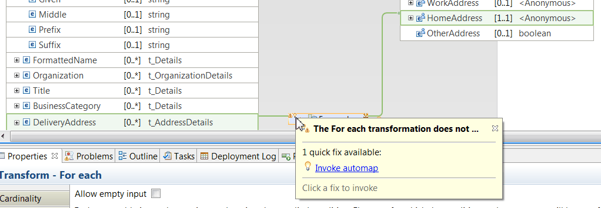
- Click the lightbulb icon, and select Invoke automap. A new window opens, which offers you different options to automate transformations in a map. In this tutorial, click Finish to apply the default transformation.
Example screen capture
- Drag a connection from vCard > DeliveryAddress to ClientDetails > HomeAddress.
-
7. To add the remaining transformations required in this tutorial for the For each nested map, complete the following steps:
- Drag a connection from Locality to City to set the output element City.
- Drag a connection from CountryName to Country to set the output element Country.
Example screen capture
Tip: To return to the main map, click the arrow on the right hand side until you are back on the main map view.
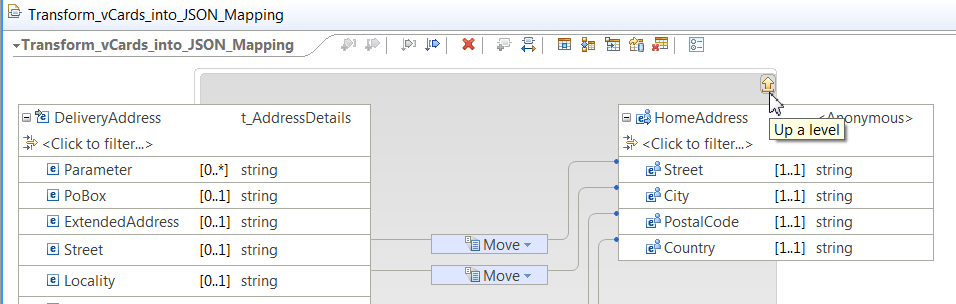
Define the transformation logic that must be applied for the Else transform:
- 8. Click the Else transform to open the nested map.
-
9. Repeat the steps outlined in the previous step. Enter Reject as the value of the Assign transform.
Example screen capture
Remove the warnings displayed in the If transform, and in the Else transform:
Background informationIn this tutorial, we only pass one instance of each element. To remove the warning of the If transform, you must complete the following steps:
- 10. Click the If transform to open the nested map.
-
11. Click the lightbulb symbol displayed in a Move transform next to a warning sign.
Example screen capture - 12. Click Set cardinality to first index to remove the warning and the lightbulb on the transform.
- 13. Repeat the previous steps for each transform that has a warning. When you complete these steps for all the transforms, the If transform warning disappears.
- 14. To remove the warning of the Else transform, repeat the same steps as described for the If transform.
You have added a conditional transform to your message map.
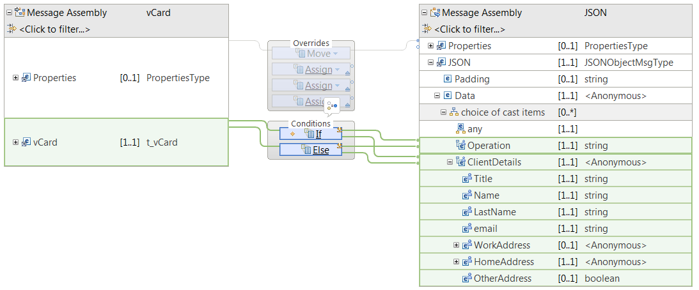
Assign the message map to a Mapping node
In IBM Integration Bus, you use the Mapping node to graphically construct one or more new messages and populate them with various types of information. A message map is the resource that you create to configure a Mapping node. For more information, see
Mapping node.
To assign a message map to a Mapping node, complete the following steps:
-
1. In the Application development view, double-click the message flow Transform_vCards_into_JSON.msgflow. The message flow opens.
Example screen capture -
2. Select the Mapping node Transform DFDL to JSON.
Example screen capture -
3. Configure the Mapping routine property for the Mapping node.
- In the Properties tab associated with the Mapping node, in the Basic tab, click the Browse... button. The Data Transformation Map Selection window opens.
- Select the {default}:Transform_vCards_into_JSON_Mapping map then click OK.
Example screen capture
After you complete the steps to assign a map to a Mapping node, the Properties tab of the Mapping node looks as follows:
Deploy the solution
The Integration Nodes view of the IBM Integration Bus Toolkit displays the default integration node named TESTNODE_name_of_your_system and other integration nodes that you have defined. Integration nodes can be local or remote.
If you expand an integration node, all the integration servers in it are displayed, as well as deployed resources.
In IBM Integration Bus, after you develop your solution, you deploy your integration solution to one or more integration servers.
For more information, see Packaging and deploying.
There are different methods that you can use to deploy your solutions. For example, you can drag the application project and related library projects from the Application Development view onto the default integration server. Alternatively, you can right-click an integration server and click Deploy to select the library or application. This method is the one demonstrated in this tutorial.
- 1. In the Integration Nodes tab, select the default integration server within the TESTNODE_name_of_your_system integration node.
-
2. Right-click the default integration server, then select Deploy.... The Resources window opens.
Example screen capture -
3. In the Resources window, select the Applications or Libraries radio button, then select the vCard_2.1_shared library, then click OK.
Example screen capture
- 1. In the Integration Nodes tab, select the default integration server within the TESTNODE_name_of_your_system integration node.
- 2. Right click the default integration server, and select Deploy. A new window opens named Resources.
- 3. In the Resources window, select the Applications or Libraries radio button, then select the HandlingVCards application, then click OK.
Your IBM Integration Bus Toolkit should look like the following figure:
Test the solution
This tutorial includes three files to help you test the solution:
- vcard sample accept.txt used to test the If path of the conditional expression.
- vcard sample reject.txt used to test the Esle path of the conditional expression.
- vcard sample multi records.txt used to test how to handle files that contain more than one vCard record.
-
1. Paste a copy of the file vcard sample accept.txt in the directory C:\IIB\BusinessCards.
Example screen capture -
2. Open the directory C:\IIB\Cards.
In this directory you should see the output file created after IBM Integration Bus processes the input message. Notice that when the output file is created, the input file disappears from the input directory.
Example screen capture
-
3. Check that the content of the output file is as indicated in the following figure:
- 1. Paste a copy of the file vcard sample reject.txt in the directory C:\IIB\BusinessCards.
- 2. Open the directory C:\IIB\Cards. In this directory you should see the output file created after IBM Integration Bus processes the input message. Observe that when the output file is created, the input file disappears from the input directory.
-
3. Check that the content of the output file is as indicated in the following figure:
- 1. Paste a copy of the file vcard sample multi records.txt in the directory C:\IIB\BusinessCards.
- 2. Open the directory C:\IIB\Cards. In this directory you should see the output file created after IBM Integration Bus processes the input message. Observe that when the output file is created, the input file disappears from the input directory.
-
3. Check that the content of the output file is as indicated in the following figure: